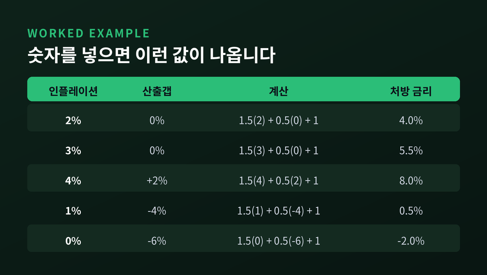
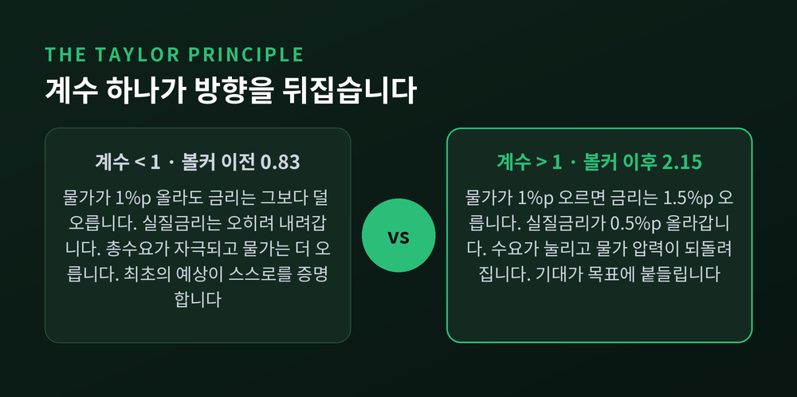
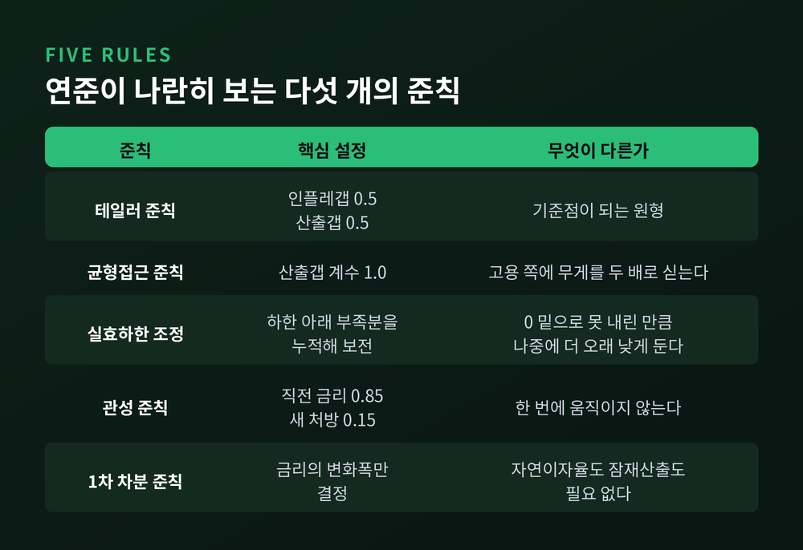
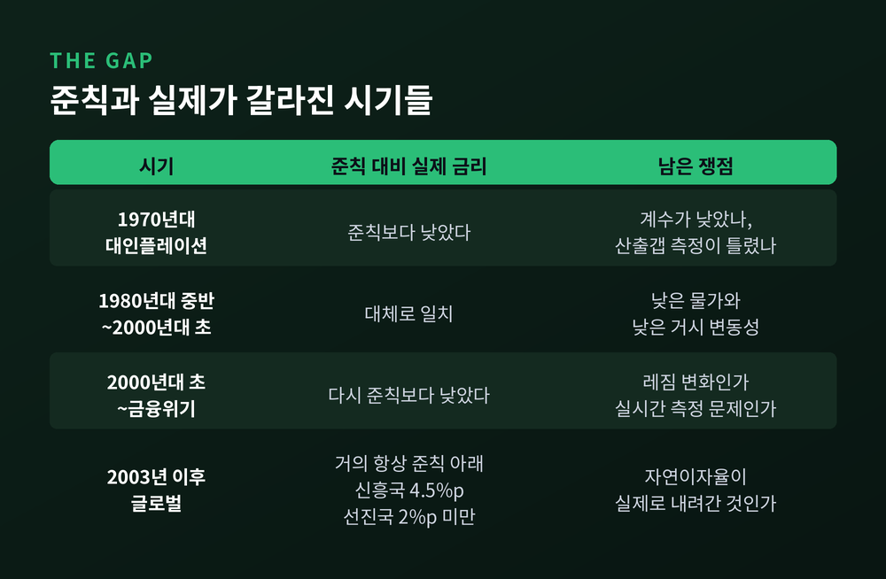

이번 글에서는 테일러 준칙을 정리해 보겠습니다. 중앙은행이 정책금리를 정할 때 실제로 어떤 계산이 오가는지, 그 계산이 현실과 얼마나 어긋나는지까지 다룹니다.
출발점은 짧습니다. 존 테일러가 1993년 『카네기-로체스터 공공정책 총서』 39권에 실은 논문 「실무에서의 재량 대 정책준칙」입니다. 195쪽부터 214쪽까지, 스무 쪽 남짓한 글입니다.
그 안에 이런 식이 하나 있습니다.
기호는 단순합니다. r은 연방기금금리입니다. p는 직전 네 개 분기의 인플레이션율입니다. y는 실질 GDP가 추세에서 얼마나 벗어났는지를 백분율로 나타낸 값, 즉 산출갭입니다. 논문은 추세를 1984년 1분기부터 1992년 3분기까지 연 2.2%로 잡았습니다.
식을 말로 풀면 이렇습니다. 인플레이션이 목표인 2%를 넘거나 실질 GDP가 추세를 넘으면 정책금리를 올린다. 둘 다 목표에 정확히 있으면 금리는 4%가 된다. 인플레이션 2%를 빼면 실질로 2%입니다.
이 2%라는 균형 실질금리를 테일러는 어디서 가져왔을까요. 가정한 정상상태 성장률 2.2%에 가깝게 잡았습니다. 경제가 자라는 속도만큼이 중립적인 실질금리라는 발상입니다.
그리고 결과가 인상적이었습니다. 논문의 그림 1은 1987년부터 1992년까지 실제 연방기금금리와 준칙이 그리는 경로를 겹쳐 보여줍니다. 두 선이 거의 붙어 있습니다. 눈에 띄는 이탈은 1987년 한 번뿐이었고, 그해 10월 주식시장이 무너졌을 때 연준이 금리를 내린 구간입니다.
계수 이야기를 조금 더 하겠습니다.
원식을 p에 대해 정리하면 모양이 달라집니다.
인플레이션 계수가 1.5로 드러납니다. 물가가 1%p 오르면 명목 정책금리는 1.5%p 오른다는 뜻입니다. 명목금리에서 물가를 빼면 실질금리이므로, 실질금리는 0.5%p 올라갑니다.
산출갭 계수 0.5는 다른 일을 합니다. 경기가 잠재 수준보다 2% 위에 있으면 금리를 1%p 더 올리라는 지시입니다. 경기가 4% 아래로 내려가면 2%p를 깎으라는 뜻이기도 합니다.
숫자를 몇 개 넣어 보면 감이 옵니다.
| 인플레이션 | 산출갭 | 계산 | 처방 금리 |
|---|---|---|---|
| 2% | 0% | 1.5(2) + 0.5(0) + 1 | 4.0% |
| 3% | 0% | 1.5(3) + 0.5(0) + 1 | 5.5% |
| 4% | +2% | 1.5(4) + 0.5(2) + 1 | 8.0% |
| 1% | −4% | 1.5(1) + 0.5(−4) + 1 | 0.5% |
| 0% | −6% | 1.5(0) + 0.5(−6) + 1 | −2.0% |
마지막 줄이 걸립니다. 식은 마이너스 2%를 부르는데 현실의 명목금리는 0 아래로 실질적으로 내려가지 않습니다. 이 문제는 뒤에서 다시 보겠습니다.
한 가지 짚고 넘어가야 할 것이 있습니다. 테일러 본인은 0.5라는 값이 최적이라고 주장한 적이 없습니다. 논문에 이렇게 적혀 있습니다. 정책준칙 계수의 크기에 대해서는 합의가 없으며, 이 숫자들은 논의를 쉽게 하기 위한 어림수라고 말입니다.

여기서 이 식의 가장 중요한 성질이 나옵니다. 테일러 원리입니다.
내용은 이렇습니다. 인플레이션이 오를 때 명목 정책금리를 1대1보다 더 크게 올려야 한다. 그래야 실질금리가 올라갑니다.
뒤집어 보면 왜 중요한지가 분명해집니다. 반응계수가 1보다 작다고 해 봅시다. 물가가 1%p 오르는데 금리는 0.8%p만 오릅니다. 실질금리는 0.2%p 떨어집니다. 돈 빌리기가 더 쉬워지고, 총수요가 자극되고, 물가는 더 오릅니다. 물가가 오를 것이라는 최초의 예상이 스스로를 증명하는 구조가 됩니다.
실증 연구가 이 지점을 겨냥했습니다. 클라리다·갈리·거틀러가 2000년 『계간 경제학지』에 실은 논문이 대표적입니다. 미국 연준의 반응함수를 볼커 취임 전후로 나눠 추정했습니다.
결과는 이렇습니다.
앞 시기의 0.83은 1보다 작습니다. 테일러 원리를 위배한 값입니다. 저자들은 이 구간에서 균형이 비결정적이 되며, 근거 없는 기대 변동만으로도 물가가 출렁일 수 있다고 봤습니다. 산출갭 계수는 각각 0.27과 0.93이었고, 물가지수를 CPI로 바꾸거나 산출갭 대신 실업률을 써도 결론은 비슷했습니다.
다만 균형 결정성과 관련해서는 정리해 둘 단서가 있습니다. 계수가 1보다 커야 한다는 조건은 기본 모형에서 성립하는 것이고, 전향적 기대를 넣은 뉴케인지언 모형에서는 충분조건일 뿐 필요조건은 아닙니다. 계수가 지나치게 커도 불안정해질 수 있다는 연구도 있습니다. 클라리다 등의 논문 각주도 유일성 구간에 상한이 존재한다고 적었습니다.

테일러 준칙 하나만 본다고 생각하면 오해입니다. 연준은 공식 문서에서 다섯 개의 준칙을 나란히 제시합니다. FOMC 회의 전 스태프 보고서에 여러 준칙의 처방이 함께 실리고, 이 관행은 2004년부터 이어져 왔습니다.
마지막 준칙이 흥미롭습니다. 관측할 수 없는 값을 아예 식에서 빼 버린 설계입니다. 대신 연준은 각주에 반대 근거도 달아두었습니다. 정책결정자의 추정이 심각하게 틀린 경우가 아니라면, 이런 준칙은 고용과 인플레이션의 변동성을 오히려 키운다는 연구가 있다는 것입니다.

이제 현실입니다. 국제결제은행이 2012년 9월 분기보고서에서 이 문제를 정면으로 다뤘습니다. 선진 11개국과 신흥 17개국의 1995년부터 2012년까지 자료를 썼습니다.
시기별로 그림이 다릅니다.
| 시기 | 준칙 대비 실제 정책금리 |
|---|---|
| 1970년대 대인플레이션 | 준칙보다 낮았다 |
| 1980년대 중반~2000년대 초 | 준칙과 대체로 일치 |
| 2000년대 초~금융위기 | 다시 준칙보다 낮았다 |
| 2003년 이후 글로벌 | 거의 항상 준칙 아래 |
괴리의 크기도 계산됐습니다. 2003년 이후 신흥국은 평균 약 4.5%p, 선진국은 평균 2%p 미만이었습니다.
원인을 두고는 의견이 갈립니다. 테일러 본인은 이를 정책 레짐이 바뀐 '대이탈'로 봅니다. 버냉키는 반박했습니다. 실시간 산출갭 추정치와 인플레이션 전망치로 벤치마크를 다시 만들면 체계적 괴리가 대부분 사라진다는 것입니다. 레짐이 바뀐 것이 아니라 투입 변수의 측정 문제라는 주장입니다. 또 다른 연구자들은 규제·감독 실패와 글로벌 불균형을 주된 동인으로 지목합니다. 보고서는 이 쟁점에 문헌이 합의에 이르지 못했다고 적었습니다.
1970년대에도 같은 논쟁이 있습니다. 오르파니데스는 당시 정책이 준칙에서 벗어났다는 통념을 뒤집었습니다. 실시간 자료를 넣으면 1960~70년대 연방기금금리는 테일러 준칙과 꽤 잘 맞았다는 것입니다. 문제는 준칙이 아니라 데이터였습니다. 당시 실시간 잠재산출 추정치가 경제의 생산능력을 크게 과대평가했고, 생산성 둔화를 제때 잡아내지 못해 오차가 한 방향으로 계속 쌓였습니다.

준칙을 실무에 쓸 때 걸리는 것은 계수가 아닙니다. 눈에 보이지 않는 값들입니다.
첫째, 자연이자율입니다. 경제가 완전히 힘을 낼 때, 인플레이션이 안정적일 때 성립할 실질 단기금리입니다. 관측되지 않습니다. 뉴욕 연준은 라우바흐-윌리엄스 모형과 홀스턴-라우바흐-윌리엄스 모형으로 이 값을 추정해 공표합니다. 코로나 이후에는 지속적 공급충격을 반영한 2023년 모형이 추가됐습니다. 뉴욕 연준은 이 추정치가 연준의 공식 전망이 아니라고 못 박아 둡니다.
문제는 이 값이 움직였다는 것입니다. 연준 공식 문서에 따르면 미국의 장기 중립 실질금리는 금융위기 이전 2%를 조금 넘던 수준에서 최근 약 1% 또는 그 이하로 내려간 것으로 보입니다. 연준 위원들의 장기 전망 중앙값도 2012년 1월 2.25%에서 2017년 9월 0.75%로 떨어졌습니다. 고령화, 생산성 둔화, 안전자산 수요가 원인으로 지목됩니다.
예전에는 균형 실질금리를 상수로 두고 계산해도 무리가 없었습니다. 지금은 그 상수 자체가 변수입니다.
둘째, 잠재산출입니다. 산출갭을 구하려면 잠재 GDP를 알아야 하는데, 이것도 추정치입니다. 오르파니데스가 1970년대에서 찾아낸 것이 바로 이 오차였습니다.
셋째, 명목금리의 하한입니다. 2008년 위기 때 다섯 준칙 모두 대폭 인하를 처방했습니다. 그리고 2009년에는 실효하한 조정 준칙을 뺀 모든 준칙이 0보다 낮은 금리를 처방했습니다. 균형접근 준칙이 부른 값은 상당 폭 마이너스였습니다. 산출갭 계수가 두 배이니 처방도 두 배로 내려간 것입니다.
연준은 이 문제를 문서에 그대로 적어 두었습니다. 장기 중립 실질금리가 2% 이하면 하한이 자주 구속되고 인플레이션이 평균적으로 2% 목표에 미달한다는 모형 시뮬레이션 결과입니다.
연준의 답은 분명합니다. 준칙을 참고하되 기계적으로 따르지 않는다는 것입니다.
공식 문서가 든 이유를 요약하면 이렇습니다. 경제의 진짜 구조는 알 수 없고, 그 구조는 시간에 따라 변합니다. 충격의 성격도 바뀝니다. 단순 준칙은 위험이 위아래로 대칭이라고 가정하지만 현실에서는 한쪽으로 크게 기울 때가 있습니다. 그리고 자연이자율 하락에 맞춰 준칙을 자주 고치면, 그 수정 자체가 중앙은행의 신뢰를 갉아먹습니다.
2026년 9월 현재의 상황을 놓고 봐도 준칙이 답을 대신하지는 못합니다. 연준은 9월 16일 회의에서 만장일치로 연방기금금리 목표범위를 0.25%p 올려 3.75~4.00%로 정했습니다. 성명은 인플레이션이 여전히 높은 수준이라고 적었습니다. 한국은행 기준금리는 8월 27일 결정으로 연 3.00%입니다. 한국은행의 물가안정목표는 소비자물가 상승률 기준 2%이며, 중기적 시계에서 달성하는 단일 수치 목표입니다.
준칙에 숫자를 넣으면 처방이 하나 나옵니다. 하지만 그 처방이 정답이라는 보장은 어디에도 없습니다. 자연이자율을 얼마로 놓느냐에 따라, 산출갭을 어떻게 재느냐에 따라, 어느 준칙을 쓰느냐에 따라 값이 크게 흔들리기 때문입니다.
그럼에도 준칙이 사라지지 않는 이유가 있습니다. 준칙은 정답을 주는 장치가 아니라 질문을 주는 장치이기 때문입니다. 지금 금리가 준칙보다 낮다면, 왜 낮은지 설명해야 합니다. 그 설명을 요구하는 일이 준칙의 쓸모입니다.
정리하면 이렇습니다.
테일러 준칙은 중앙은행의 판단을 대신하지 않습니다. 판단을 드러내게 만듭니다.
1993년의 그 한 줄짜리 식이 서른 해를 넘겨 살아남은 이유를 묻는다면, 답이 맞아서가 아니라 질문이 좋아서라고 말하겠습니다.